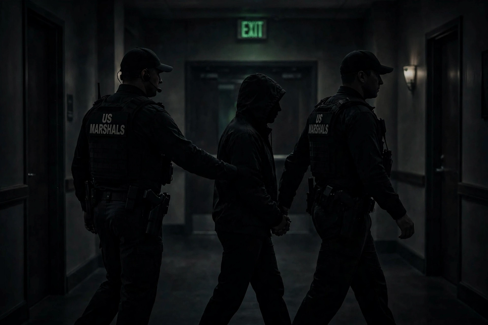

Witness protection is security provided to a threatened person providing testimonial evidence to the justice system, including defendants and other witnesses. In some countries it is a formal program run by a specialised agency that protects a witness who is at danger of physical harm.
The United States Federal Witness Protection Program, known as WITSEC, was established under the Organized Crime Control Act of 1970, championed by the Department of Justice attorney Gerald Shur. It provides for relocation and protection of witnesses who are in danger due to their testimony against drug traffickers, terrorists, organized-crime figures and other major criminals.
Witnesses are usually given a new identity, including new documents such as birth certificates and social security numbers, assistance with housing and employment, and funds for basic living expenses. They are expected to cut ties with former associates and to not return to their former communities without authorization. Breach of program rules can lead to removal from protection.
The Marshals Service states it has protected about 19,000 witnesses and their family members since 1971. Protected witnesses are not required to be US citizens. Similar programs exist at state level, and other countries including the United Kingdom, Canada, Australia, Germany, and Ukraine operate their own schemes. See also Robert Mueller and organized crime prosecutions.
Critics note the difficulty of long-term relocation, psychological strain on families, and controversies when protected witnesses commit new crimes while in the program.